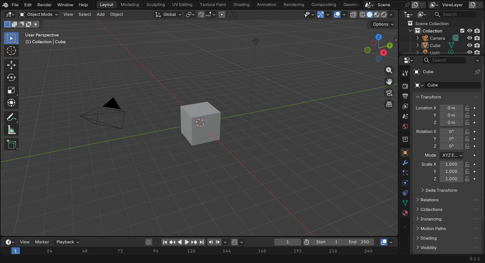
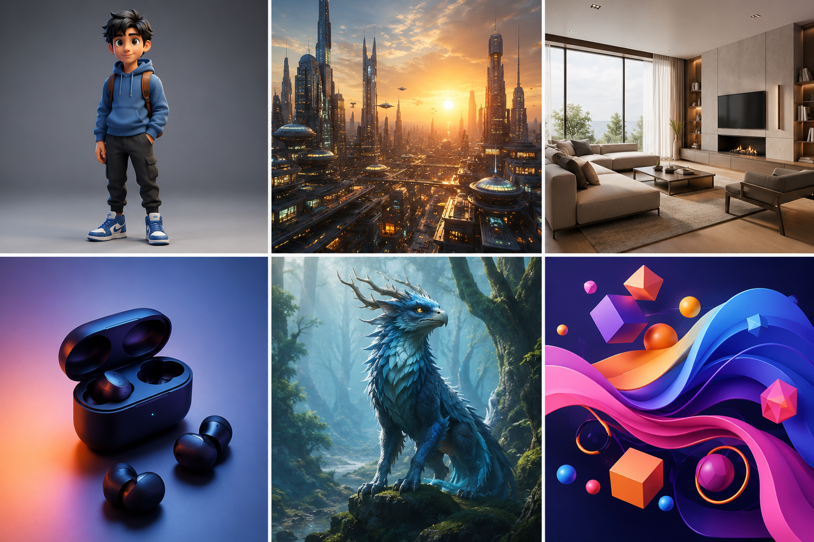
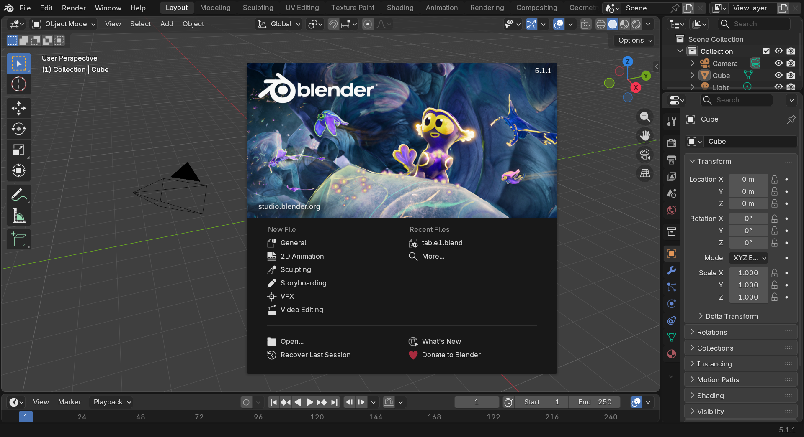

🚀 Welcome to Blender
You're about to embark on an incredible journey into the world of 3D creation. Whether you dream of creating stunning visual effects, designing video game characters, building architectural visualizations, or bringing your wildest ideas to life in three dimensions, Blender is your gateway to making it happen.
📚 What You'll Learn
- What Blender is and why it's a game-changer for 3D artists
- The incredible things you can create with Blender
- How this course is structured to take you from beginner to confident creator
- What makes Blender different from other 3D software
- Your first steps as a 3D artist
⏱️ Estimated Time: 30-45 minutes
🎯 Project: Setting up your creative workspace and mindset
📑 In This Lesson
🎨 What Is Blender?
Imagine having a complete digital studio at your fingertips—a place where you can sculpt, paint, animate, light, and render anything you can dream up. That's Blender.

Blender is a free, open-source 3D creation suite that's used by everyone from solo artists creating YouTube animations to major studios working on Hollywood films. Think of it as Photoshop, After Effects, Maya, and ZBrush all rolled into one powerful package—except it won't cost you a penny.
💡 The "Swiss Army Knife" of 3D
Blender isn't just one tool—it's an entire creative ecosystem. You can model a character, texture their clothes, rig them for animation, animate them dancing, light the scene, render it beautifully, and even edit the final video—all within the same software. No constant switching between programs, no compatibility headaches.
A Brief History Worth Knowing
Blender started in the 1990s as an in-house tool for a Dutch animation studio. When that studio closed, the creator decided to release it to the world as free, open-source software. Since then, it's been developed by a passionate community of artists, programmers, and studios who all contribute to making it better.
What does "open-source" mean for you? It means Blender is completely free—no subscription fees, no "lite" versions, no hidden costs. You get the full professional package, and you can use it for personal projects, commercial work, or anything in between.
Who Uses Blender?
You're joining an incredibly diverse community. Blender is used by:
- Independent artists creating stunning personal projects and building careers
- Game developers crafting characters, environments, and assets
- Architects visualizing buildings before they're built
- Product designers prototyping and presenting concepts
- VFX studios working on films and commercials (yes, major Hollywood productions!)
- Educators and scientists creating visualizations of complex concepts
- 3D printing enthusiasts designing objects to bring into the physical world
Real Talk: Blender has been used in productions like Spider-Man: Into the Spider-Verse, Netflix shows, indie games, architectural firms worldwide, and countless YouTube channels with millions of subscribers. If you can dream it, Blender can help you create it.
💎 Why Choose Blender?
With so many 3D software options out there, why should you learn Blender? Let's break down what makes it special.
It's Completely Free (Seriously)
Other professional 3D software can cost thousands of dollars per year in subscriptions. Blender is 100% free, forever. No trials, no watermarks, no "upgrade to unlock features." You're getting the same software that professional studios use, at zero cost.
✅ What "Free" Really Means
You can use Blender for:
- Personal art projects and learning
- Commercial work and selling your creations
- Client projects and freelance work
- Studio production work
- Teaching and educational content
No licenses to worry about, no legal fine print to navigate. Just pure creative freedom.
It's Incredibly Powerful
Don't let "free" fool you into thinking Blender is a toy. It's a professional-grade tool with capabilities that rival or exceed software costing tens of thousands of dollars. Here's what's packed inside:
It Has an Amazing Community
Learning 3D can feel overwhelming at times, but you're not alone. Blender has one of the most supportive and active communities in the creative software world. Think of it as having millions of fellow students and mentors available 24/7.
Where to find help:
- Blender Artists Forum: Thousands of artists sharing work and helping each other
- YouTube: Countless free tutorials covering every conceivable topic
- Reddit (r/blender): Daily inspiration and quick answers to questions
- Discord servers: Real-time chat with other learners and pros
- Stack Exchange: Technical questions answered by experts
⚠️ A Word About Learning Resources
Because Blender is free and popular, you'll find thousands of tutorials online. This is both a blessing and a challenge. Stick with structured courses (like this one!) when you're starting out. Random tutorial hopping can leave you with scattered knowledge and gaps in fundamentals. Once you have a solid foundation, then you can explore freely!
It's Constantly Improving
Blender gets major updates every few months, always free. New features that other software charges extra for? They just get added to Blender at no cost. The development is transparent, community-driven, and focused on what artists actually need.
It Runs on Any Computer
Blender works on Windows, Mac, and Linux. You don't need a supercomputer to get started—Blender can run on surprisingly modest hardware. Of course, better specs help with complex scenes and faster renders, but you can absolutely learn and create beautiful work on an average laptop.
Hardware Reality Check: Yes, 3D work is demanding. But Blender is well-optimized. Many successful artists started on budget laptops and upgraded as they grew. Your creativity matters more than your computer specs when you're learning.
🎬 What Can You Create with Blender?
This is where things get exciting. Blender's versatility means you can pursue almost any type of 3D creation. Let's explore the possibilities.

Character Art and Animation
Create characters from scratch—model them, give them personality through texturing, rig them so they can move, and animate them telling stories. This is what draws many people to 3D: the ability to bring characters to life.
You could make:
- Stylized cartoon characters for animations
- Realistic human characters for films or games
- Creatures and monsters from your imagination
- Character rigs for game engines like Unity or Unreal
💡 From This Course
While this course focuses on getting you comfortable with Blender's fundamentals, character creation and animation modules will teach you everything from basic modeling to full character animation pipelines.
Environment and Scene Design
Build entire worlds—fantasy landscapes, sci-fi cities, cozy interiors, or post-apocalyptic ruins. Environment art is like being a digital set designer, creating the spaces where stories unfold.
Examples include:
- Game environments and levels
- Film and animation backgrounds
- Virtual reality experiences
- Fantasy or sci-fi worlds for concept art
Product Visualization
Companies need beautiful images of their products—for websites, advertisements, packaging, and presentations. With Blender, you can create photorealistic product renders that look indistinguishable from photographs.
Perfect for:
- Product design and prototyping
- E-commerce product images
- Advertising and marketing materials
- Industrial design presentations
Architectural Visualization
Show clients what their building will look like before the first brick is laid. Architectural visualization (archviz) is a booming field where Blender excels. Walk clients through spaces that don't exist yet, show how light will move through rooms at different times of day, and help them make decisions with confidence.
✅ Career Opportunity
Architectural visualization is one of the most lucrative fields for Blender artists. Architects and developers pay well for quality renderings, and the demand is steady. Many Blender artists build successful freelance careers in archviz alone.
Visual Effects (VFX)
Add impossible elements to real footage. Make buildings explode, create magical effects, or seamlessly integrate 3D objects into filmed scenes. Blender's motion tracking and compositing tools make it a serious VFX contender.
Motion Graphics
Create eye-catching animated graphics for videos, commercials, and presentations. Those slick logo animations and dynamic text effects you see? Many are made in Blender.
Game Assets
Build characters, props, weapons, vehicles, and environments for games. Blender exports to all major game engines, making it a favorite tool for indie game developers and major studios alike.
3D Printing
Design objects that jump from the digital world into physical reality. Whether it's custom jewelry, replacement parts, miniatures for tabletop games, or artistic sculptures, Blender can prepare models for 3D printing.
The Best Part? You don't have to choose just one path. Many successful artists work across multiple areas. You might create characters for a game project, do some product visualization for a client, and work on a personal animation—all using the same skills and software.
🗺️ How This Course Works
Learning Blender can feel like learning a new language—and in many ways, it is. That's why this course is carefully structured to build your skills progressively, one step at a time.
Our Teaching Philosophy
Think of learning 3D like learning to play a musical instrument. You don't start by performing a concerto. You start with simple exercises, build technique, and gradually work up to more complex pieces. That's exactly how we'll approach Blender.
This course follows these principles:
- Hands-on from day one: You'll be creating things immediately, not just watching or reading
- Foundational focus: We build strong fundamentals before moving to advanced techniques
- Progressive complexity: Each lesson builds on previous ones, gradually increasing challenge
- Practical projects: Every module includes real-world projects you can add to your portfolio
- Clear explanations: We'll explain not just HOW to do something, but WHY we're doing it
Course Structure Overview
This course is divided into twelve modules, taking you from absolute beginner to confident creator:
The Learning Path
Foundation Phase (Modules 1-6): Here we build your core Blender skills. You'll learn to navigate the interface, create and manipulate 3D objects, apply materials and textures, set up lighting, compose shots with cameras, and begin animating. By the end of this phase, you'll be able to create complete, polished 3D scenes.
Advanced Phase (Modules 7-12): Now we go deeper. You'll master advanced modeling techniques including sculpting, learn particle systems and physics simulations, create and rig characters, dive into powerful node-based workflows, optimize your scenes professionally, and complete portfolio-worthy projects that showcase your skills.
What Each Lesson Includes
Every lesson follows a consistent structure designed to maximize your learning:
- Clear Learning Objectives: You'll know exactly what you're going to learn
- Conceptual Explanation: Understanding the "why" behind the techniques
- Step-by-Step Instructions: Detailed guidance through each process
- Visual Aids: Diagrams, flowcharts, and reference images
- Hands-On Project: Immediate practice applying what you've learned
- Pro Tips: Insider knowledge and shortcuts from experienced artists
- Common Mistakes: What to avoid and how to troubleshoot
- Summary and Review: Key takeaways and next steps
💡 How to Use This Course
At your own pace: There's no rush. Take the time you need to understand each concept fully before moving on.
Practice, practice, practice: Do the projects. Repeat exercises. Experiment beyond the lessons. That's where real learning happens.
Take notes: Keep a digital or physical notebook. Writing things down helps cement knowledge.
Build a portfolio: Save your project files. Even early work shows your progress and growth as an artist.
Estimated Time Investment
Everyone learns at different speeds, but here's a rough guide:
- Foundation modules (1-6): 12-16 weeks at 4-6 hours per week
- Advanced modules (7-12): 8-12 weeks at 5-8 hours per week
- Total commitment: 4-6 months for the complete course
Remember, these are estimates. Some people move faster, others need more time. Both are perfectly fine. The goal isn't speed—it's genuine understanding and skill development.
Marathon, Not a Sprint: Professional 3D artists often say it takes about a year of focused practice to become competent, and several years to become truly skilled. This course gives you a structured path for that first critical year. Embrace the journey!
🧠 The Right Learning Mindset
Before we dive into the software itself, let's talk about mindset. How you approach learning Blender will significantly impact your success and enjoyment.
Embrace the Beginner Stage
Everyone who's great at Blender was once exactly where you are now—staring at a blank screen, not knowing where to start. The difference between those who became skilled and those who gave up often comes down to mindset, not talent.
✅ Growth Mindset in Action
Fixed mindset says: "I'm not creative" or "I'm not good at technical stuff."
Growth mindset says: "I haven't learned this yet" and "I'll get better with practice."
That simple shift—from "I can't" to "I can't yet"—makes all the difference.
Patience Is Your Superpower
Learning 3D is like learning a new language combined with learning to draw. It takes time. Your first models will look rough. Your first animations will be stiff. Your first renders might not look quite right. This is completely normal and expected.
Every professional Blender artist has a folder of embarrassing early work they look back on and laugh about. Those "bad" early pieces are actually proof of progress—they show where you started so you can see how far you've come.
The Plateau Pattern
Your progress won't be linear. You'll have breakthroughs where everything clicks, and you'll have plateaus where you feel stuck. This is the natural rhythm of learning complex skills:
When you hit a plateau, don't get discouraged. It means your brain is processing and integrating what you've learned. Keep practicing, and the next breakthrough will come.
Comparison Is the Enemy
In the age of social media, it's easy to see incredible Blender art and feel intimidated. Remember: you're seeing the polished final pieces, not the years of practice behind them. You're seeing the highlight reel, not the hundreds of failed attempts and learning projects.
⚠️ The Instagram Effect
Following amazing Blender artists can be inspiring, but it can also be discouraging when you're starting out. Balance inspiration with realism. Those artists were beginners once too. They just didn't post their early work online!
Instead of comparing yourself to professionals, compare yourself to where you were last week, last month, or when you started. That's the only comparison that matters.
Mistakes Are Learning Opportunities
You will click the wrong buttons. You will accidentally delete things. You will forget to save and lose work. You will create renders that look nothing like what you intended. This isn't failure—this is the learning process.
Some of the best techniques and creative solutions come from "happy accidents." Embrace experimentation and don't fear mistakes. Every error teaches you something about how Blender works.
Community Over Competition
The Blender community is remarkably supportive and collaborative. Most artists are happy to help beginners, share techniques, and celebrate your progress. Don't hesitate to ask questions, share your work (even if it's not perfect), and engage with other learners.
Tips for community engagement:
- Ask specific questions rather than "How do I do this entire thing?"
- Show what you've tried before asking for help
- Thank people who help you
- Pay it forward by helping other beginners when you can
- Share your progress—people love seeing learning journeys
The 3D Artist's Oath: "I will be patient with myself. I will practice regularly. I will learn from mistakes. I will celebrate small wins. I will help others when I can. I will never stop learning."
🛠️ Getting Ready to Start
Before we jump into Blender itself in the next lesson, let's make sure you're set up for success.
System Requirements
Blender is surprisingly flexible with hardware requirements. Here's what you need:
Minimum Requirements (You Can Learn)
- Operating System: Windows 10 or 11, macOS 13 (Ventura) or later on Apple Silicon, or a recent Linux distribution (glibc 2.28 or newer)
- Processor: 64-bit quad-core CPU with SSE 4.2 support
- RAM: 8 GB
- Graphics: 2 GB VRAM, OpenGL 4.3 or Vulkan support
- Display: 1280×768 pixels
- Storage: 500 MB for installation
Recommended Requirements (Better Experience)
- Processor: 8-core CPU or better
- RAM: 32 GB or more
- Graphics: 8 GB+ VRAM, recent NVIDIA RTX or AMD RX 7000 series
- Display: 1920×1080 or higher resolution
- Input: Three-button mouse with scroll wheel (highly recommended!)
💡 About Your Mouse
While you can technically use Blender with a trackpad, it's challenging. A basic three-button mouse with a scroll wheel will make your learning experience dramatically better. They're inexpensive and make a huge difference. Consider it a small investment in your 3D education!
Downloading and Installing Blender
Getting Blender is straightforward:
- Visit the official site: Go to blender.org/download
- Choose your version: Download the latest stable release for your operating system
- Install: Run the installer and follow the prompts (standard installation is fine)
- Launch: Open Blender and you're ready to go!

✅ Version Note
This course targets Blender 5.1, the current stable release (March 2026). The interface and features in the 5.x series are largely consistent, so any 5.0 or 5.1 install will work for these lessons; screenshots may specifically show 5.1.1. If you're using Blender 4.x, most concepts still apply, but some interface elements (notably the splash screen, Vulkan defaults, and a few node names) will look different. Older versions (3.x or earlier) aren't recommended for this course.
Setting Up Your Workspace
Your physical workspace matters for learning 3D. Here's how to set yourself up for success:
Ergonomics Matter
- Monitor position: Screen at eye level, about arm's length away
- Seating: Chair with good back support (you'll be sitting a while!)
- Lighting: Reduce screen glare, but keep enough light to prevent eye strain
- Keyboard and mouse: Positioned comfortably at elbow height
Minimize Distractions
Learning Blender requires focus. When you're working through lessons:
- Close unnecessary browser tabs and applications
- Put your phone in another room or on "Do Not Disturb"
- Let household members know you need focused time
- Consider using a timer (25-minute focused work sessions work well)
Creating Your Learning Environment
Organization helps learning. Before starting lessons, set up:
Project Folder Structure
Create a dedicated folder system on your computer:
Blender_Learning/
│
├── Course_Projects/
│ ├── Module_01/
│ ├── Module_02/
│ └── ... (create as you progress)
│
├── Practice_Files/
│ └── (experiments and practice work)
│
├── Reference_Images/
│ └── (inspiration and reference materials)
│
├── Resources/
│ └── (downloaded assets, textures, etc.)
│
└── Portfolio/
└── (your best finished work)💡 Save Early, Save Often
Get in the habit of saving frequently (Ctrl+S / Cmd+S). Use incremental saves (File > Save As) for different versions of projects. Trust us—everyone learns this lesson the hard way at least once. Don't be that person who loses hours of work!
Learning Journal
Consider keeping a learning journal—digital or physical. After each lesson, jot down:
- Key concepts you learned
- Techniques that clicked for you
- Questions or confusion points
- Ideas you want to try
- Your progress and feelings about learning
Looking back at your journal entries weeks or months later shows you just how much you've grown.
Additional Resources to Bookmark
While this course provides everything you need to learn Blender, these resources are helpful to have on hand:
- Blender Manual: docs.blender.org (official documentation)
- Blender Artists Forum: blenderartists.org (community help)
- r/blender: reddit.com/r/blender (daily inspiration and help)
- Blender Cloud: cloud.blender.org (training and resources)
- Right-Click Select: blender.community (feature requests and development)
A Note on Tutorials: While there are thousands of free Blender tutorials online, resist the urge to jump around randomly when you're starting. Stick with this structured course for your foundation. Once you've completed several modules and feel comfortable with the basics, then exploring external tutorials becomes much more productive.
🎯 Your First Project: Setting Up
Let's make this lesson practical. Your first "project" is simple but important: preparing your learning environment.
Project Steps
Step 1: Download and Install Blender
- Visit blender.org/download
- Download the latest version for your operating system
- Install Blender using the default settings
- Launch Blender to confirm it works
Time estimate: 10-15 minutes
Step 2: Create Your Folder Structure
- Choose a location for your Blender learning files (Documents folder works well)
- Create a main "Blender_Learning" folder
- Inside it, create the subfolders listed earlier
- Create a "Module_01" folder inside "Course_Projects"
Time estimate: 5 minutes
Step 3: Optimize Your Physical Workspace
- Adjust your chair and desk height for comfort
- Position your monitor at eye level
- Ensure you have a three-button mouse with scroll wheel
- Check lighting to minimize glare
- Have water or tea nearby (stay hydrated!)
Time estimate: 10 minutes
Step 4: Start Your Learning Journal
- Open a notebook or create a digital document
- Title it "Blender Learning Journal"
- Write your first entry: Why do you want to learn Blender? What do you hope to create?
- Set a personal goal for your learning journey
Time estimate: 10-15 minutes
Step 5: Launch Blender and Explore
- Open Blender (don't worry about understanding anything yet!)
- Just look around the interface—notice the different areas
- Click a few things to see what happens (you can't break anything!)
- Close Blender—we'll dive deep into the interface in the next lesson
Time estimate: 5 minutes
Success Checklist
You've completed this lesson's project when you can check off all of these:
✅ Project Completion
- ✅ Blender is installed and launches successfully
- ✅ Your learning folder structure is created and organized
- ✅ Your physical workspace is comfortable and ergonomic
- ✅ You have a three-button mouse (or ordered one)
- ✅ Your learning journal is started with your first entry
- ✅ You've launched Blender and seen the interface
- ✅ You've bookmarked this course for easy access
Bonus Challenges (Optional)
If you want to go further:
- Join the community: Create an account on r/blender or Blender Artists forum
- Gather inspiration: Browse r/blender or Instagram's #b3d hashtag to see what's possible
- Set up bookmarks: Add the resources mentioned earlier to your browser favorites
- Share your commitment: Tell a friend or family member about your Blender learning journey (accountability helps!)
Celebrate This Moment: You've taken the first real step. You're no longer someone who's thinking about learning 3D—you're someone who IS learning 3D. That's worth recognizing!
📝 Lesson Summary
Let's recap what we covered in this introductory lesson.
🎓 Key Takeaways
- Blender is professional 3D software that's completely free and open-source, used by individuals and major studios alike
- You can create almost anything—from characters and environments to product visualizations and visual effects
- This course is structured progressively, building your skills from absolute beginner to confident creator over 12 modules
- Mindset matters enormously—patience, persistence, and a growth mindset will carry you further than natural talent
- Setting up properly for learning (both software and environment) sets you up for success
- The Blender community is supportive and ready to help you on your journey
What You've Accomplished
In this lesson, you:
- Learned what Blender is and why it's an excellent choice for 3D creation
- Explored the many possibilities of what you can create with 3D skills
- Understood how this course is structured and what to expect
- Developed the right mindset for successful learning
- Set up your learning environment both digitally and physically
- Installed Blender and prepared for hands-on learning
Common Questions at This Stage
❓ "How long until I can create professional-looking work?"
With consistent practice, many students create portfolio-worthy pieces within 3-6 months. But remember, "professional-looking" is relative. Your skills will improve continuously. Focus on steady progress rather than arbitrary timelines.
❓ "What if I'm not artistic or creative?"
3D work involves both technical and creative skills. Many successful 3D artists started believing they weren't "artistic." Technical skills like modeling precision can carry you far, and creativity develops with practice and exposure to good work.
❓ "Is my computer powerful enough?"
If Blender launches and runs on your computer, you can learn with it. Yes, a better computer helps with complex scenes and faster renders, but you don't need top specs to master the fundamentals. Many professionals started on modest hardware.
❓ "Should I learn other 3D software too?"
Focus on mastering Blender first. Once you understand 3D concepts deeply in one program, learning others becomes much easier. Many 3D principles translate across software. Build expertise in one tool before spreading yourself thin.
Looking Ahead
In the next lesson, we'll dive into the Blender interface itself. You'll learn to navigate the 3D viewport, understand the various editor types, and become comfortable in Blender's environment. We'll demystify that initial "what am I looking at?" feeling and help you feel at home in the software.
💡 Before the Next Lesson
Make sure you've:
- Completed all steps in the project section
- Verified Blender launches successfully on your computer
- Set up your folder structure for organizing files
- Written in your learning journal about your goals
These preparations will make the next lesson much smoother and more productive.
Encouragement for the Journey
Every expert was once a beginner. Every stunning piece of 3D art you've seen was created by someone who once sat exactly where you are now, looking at Blender for the first time and wondering where to start.
The difference between those who achieve their goals and those who don't usually isn't talent or natural ability—it's showing up consistently, being patient with the learning process, and not giving up when things feel difficult.
You've already taken the most important step: you've started. That puts you ahead of everyone who's still thinking about it.
🌟 You're Not Just Learning Software
You're developing a valuable skill that opens doors to creative careers, allows you to bring your imagination to life, and connects you with a worldwide community of artists and creators.
Welcome to your 3D journey. Let's create something amazing together.